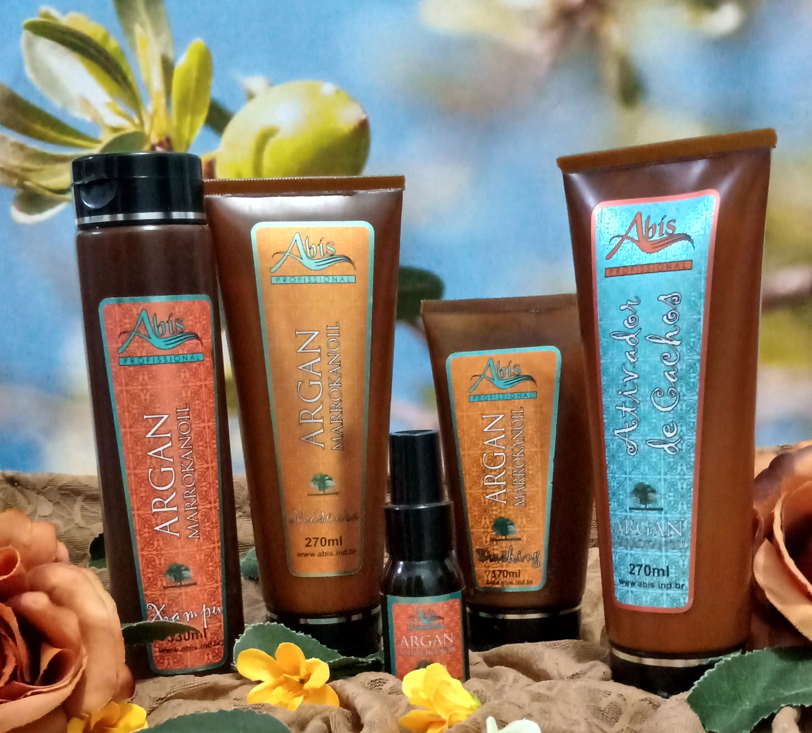

Kit completo Abís Argan
Kit para uso profissional em salão de beleza. Produtos com carga lipídica mais concentrada. Ideal para cabelos secos, cacheados e crespos.

Xampú Abís Argan
Shampoo tem o pH balanceado.Seu objetivo é limpar e condicionar o cabelo evitando o embaraço excessivo dos fios.
Bio abis
É indicado em situações extremas onde o fio apresenta desgastes após uso prolongado de quimica de transformação, por descuido ou pela utilização indevida de produtos químicos no cabelo gerando grande
estresse para o mesmo.
Age profundamente em pontos frágeis dos fios sendo eficaz devido a grande diversidade de aminoácidos presentes em sua formulação e o grande número de proteínas e vitaminas. É um dos produtos mais potentes
para nutrição e reconstrução de fios da Abís.
Máscara Abís Argan
Possui uma carga lipídica maior que outros produtos tendo a intenção de proporcionar hidratação e maciez para uma melhor penteabilidade. Tem rica combinação de proteínas hidrolisadas, inclusive
o Pantenol responsável por hidratar pele e cabelo. Elas agem de forma seletiva nos pontos frágeis do cabelo fortalecendo e eliminando a quebra dos fios, além de promover brilho.

Abís brushing
É um leave-in. Foi criado para ficar no cabelo. Possui uma combinação de silicones que age como protetor solar e térmico. Cria uma película no fio impedindo agressão externa ou ou protegendo do calor.
Ativador de Cachos
É um Leave-in de proteção para fios contra o calor e agressões externas do dia a dia. Porém sua ação é de auxílio para ativar cachos. Pode proporcionar mais peso ou não para o cabelo dependendo
da quantidade usada.
Dica:
Para finalizar adicione algumas gotinhas do Óleo Abís Argan ao brushing ou ao Ativador de cachos. Emulsione o dois juntos nas mãos e aplique nos cabelos.

Abís Argan Marrokanoil
É um óleo vegetal retirado de nozes da planta Argania Spinosa. Preserva a umidade natural dos fios. Hidratante, nutritivo, reconstrutor, antioxidante protege das agressões externas como
sol, poluição... Combate o ressecamento, controla o volume, elimina as pontas duplas, oferece maciez, condicionamento e brilho intenso.